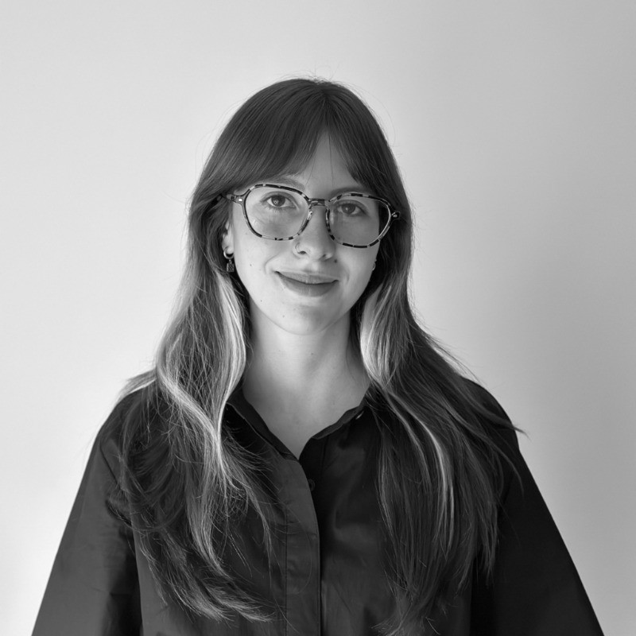

About me
Estudié Biología con una Opción en Astronomía en la Universidad de los Andes, en Colombia. Allí aprendí a observar sistemas vivos, hacerme preguntas y seguir pistas con método científico. Me interesé particularmente por la ciencia de datos, la ecología tropical y los primates de Colombia.
Fui profesora de ciencias y biología en secundaria durante dos años. Antes, trabajé unos meses como mediadora en la exposición "Salvando Primates" de National Geographic, y durante casi dos años como analista de datos biológicos y divulgadora científica en el Instituto Humboldt. En 2020 fundé La Enredadera & co., un colectivo de comunicación científica que produce podcasts, videos, textos y talleres para acercar el conocimiento académico a públicos diversos.
Ahora curso el máster en BioDiseño en Central Saint Martins (University of the Arts, London). Allí estoy aprendiendo a usar mis herramientas de científica para diseñar con propósito. Mi trabajo, que puedes explorar en esta página web, explora materiales creados en colaboración con organismos vivos, la biología sintética, el creative coding y las narrativas especulativas.
Mi práctica combina investigación de laboratorio, aprendizaje de comunidades y de lo más-que-humano, y una convicción profunda en el poder de la educación.
I studied Biology with a Minor in Astronomy at Universidad de los Andes in Colombia. There, I learned to observe living systems, ask questions, and follow clues using the scientific method. I developed a particular interest in data science, tropical ecology, and Colombia's primates.
I spent two years as a middle and high school science teacher. Before that, I worked for a few months as a mediator for National Geographic's "Saving Primates" exhibition, and for nearly two years as a biological data analyst and science communicator at the Humboldt Institute. In 2020, I founded La Enredadera & co., a science communication collective that produces podcasts, videos, texts, and workshops to bring academic knowledge closer to diverse audiences.
I am currently pursuing an MA in BioDesign at Central Saint Martins (University of the Arts, London). There, I am learning to use my scientific tools to design with purpose. My work, which you can explore on this website, explores materials grown in collaboration with living organisms, synthetic biology, creative coding, and speculative narratives.
My practice combines lab research, learning from communities and the more-than-human, and a deep belief in the power of education.